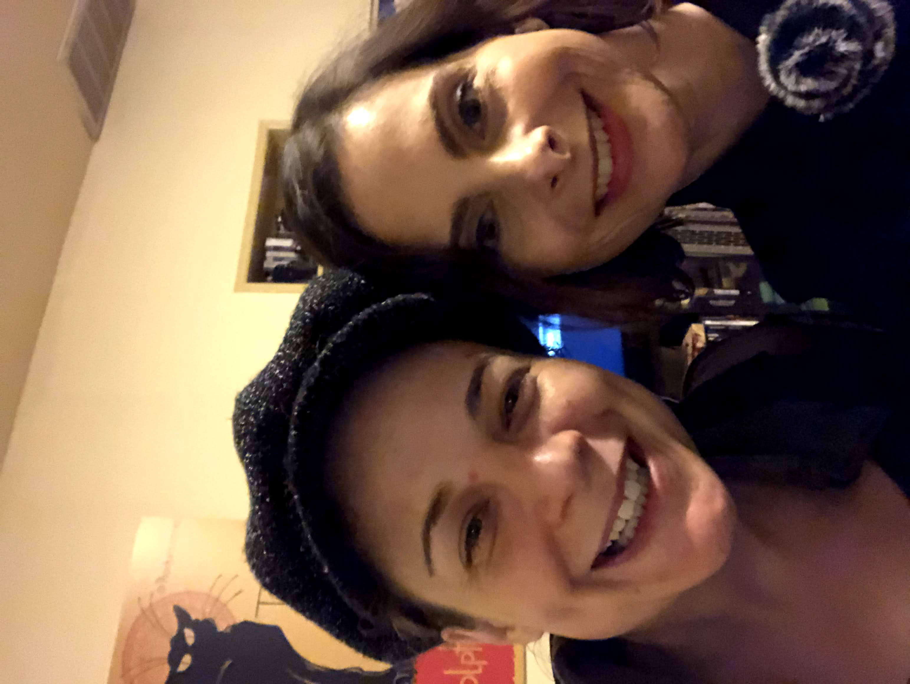
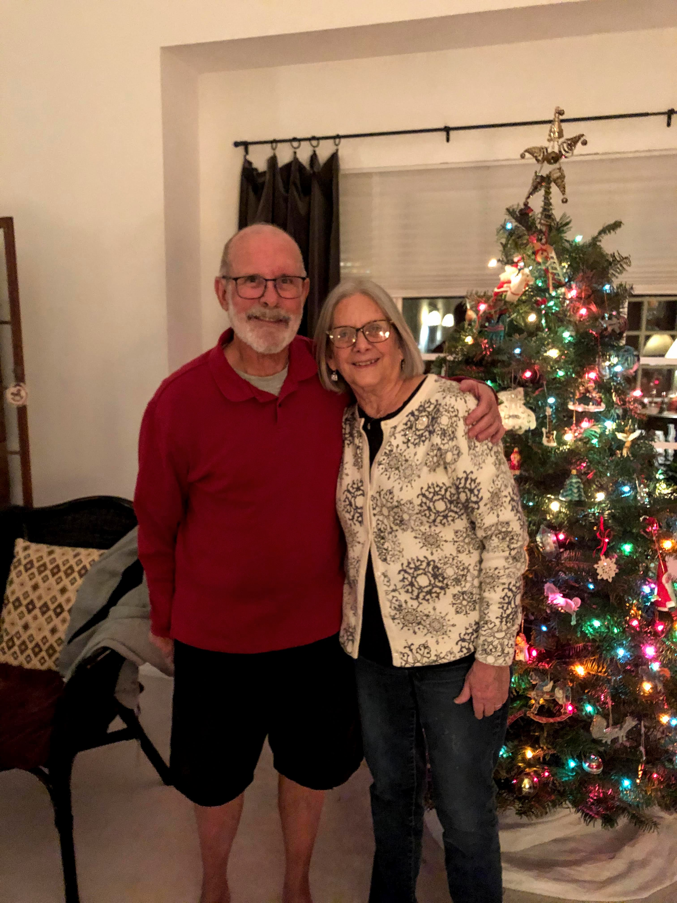
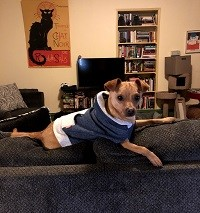

Favorite people
Annie Schnarr
This is me with my best friend Annie. Sadly, she is stuck in Chicago for the length of this pandemic. She is a lecturer in the University Writing Program at UCR.
Bonnie and Paul Burckin
These are my parents. Aren't they cute? They are retired and live in Moorpark, Ca in the same house where I grew up.
Favorite animals
Bear

This is Bear, the oldest and grumpiest feline member of our household at 16. She looked just like a bear cub when she was born. She is the grande dame of the family and everyone defers to her whims.
Alice

This is Alice, the sweetest of the cats. She was named after the villainess in the show Luther, and is just as beautiful but much nicer than her namesake. I recorded her meow for a Scratch game. Click on her pic to take a look.
Selina

Meet Selina, the joker in our family. She was named after Selina Kyle, Catwoman, and is just as agile and sneaky. You can always count on Selina to do something hilarious.
Oliver
This is Oliver, named after Oliver Queen, the Green Arrow. He is the only dog and the only male animal. He is extremely high energy and can clear surprisingly high hurdles.